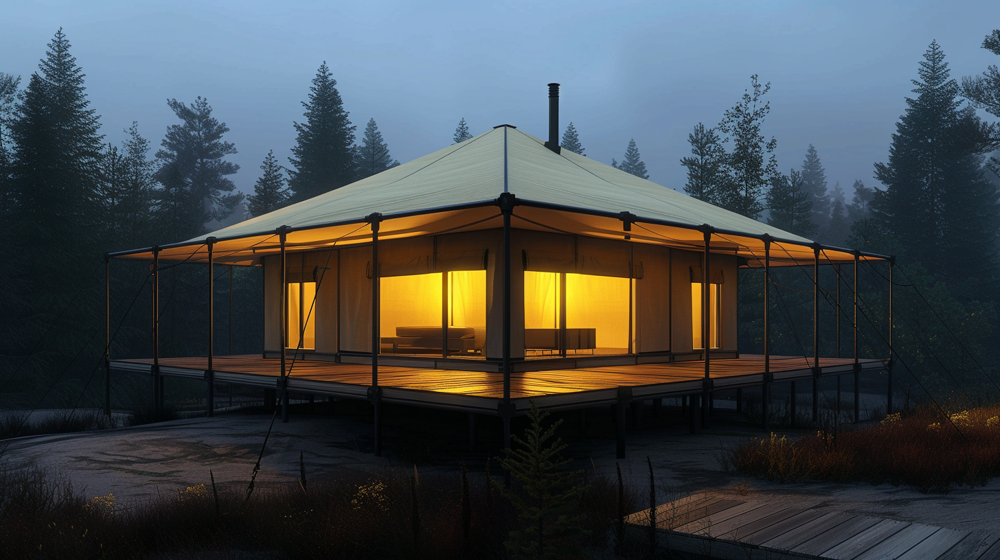
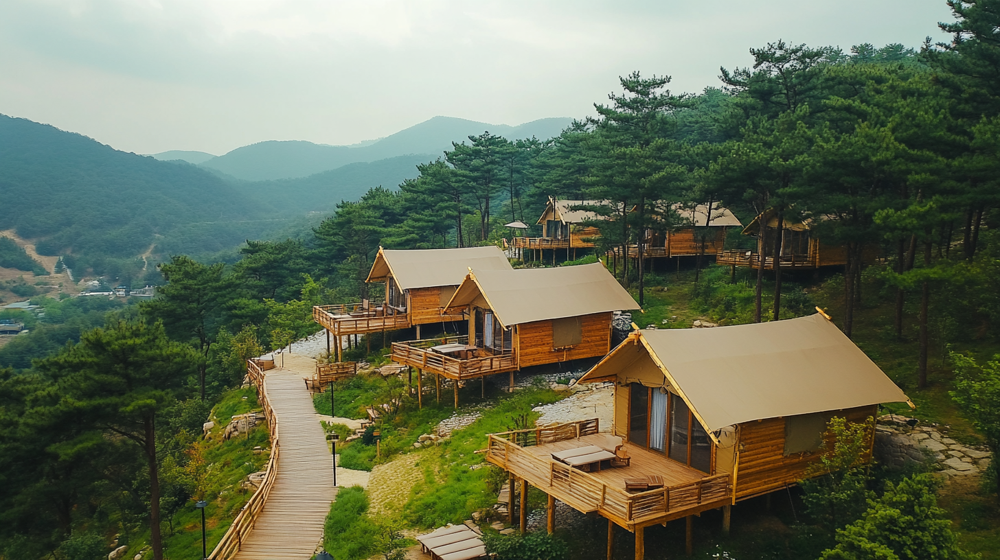

호텔 부지 내 유휴 공간을 활용하여 추가 건축 없이 객단가 2~3배 상승. 기존 운영 시스템에 즉시 통합 가능하며, 글램핑 객실 도입 호텔의 예약률이 평균 35% 상승했습니다.

5성급 호텔들이 이미 글램핑 객실을 도입하고 있습니다. 추가 건축 허가 없이, 기존 인력만으로 운영 가능한 WOCS 글램핑는 호텔의 차별화 전략입니다. 정원, 옥상, 주차장 상부 등 유휴 공간을 프리미엄 객실로 전환하세요. 호텔 브랜드 아이덴티티에 맞춘 풀 커스터마이징을 지원합니다.
독특한 글램핑 객실은 호텔의 차별화 포인트가 되어 새로운 고객층을 유치합니다.
프리미엄 글램핑 객실은 일반 객실 대비 2~3배 높은 가격 책정이 가능합니다.
기존 호텔 운영 시스템에 바로 통합 가능하며, 추가 인력이 거의 필요 없습니다.

기존 부티크 호텔의 정원이나 옥상에 프리미엄 글램핑를 배치하여 객실 수를 늘리고 독특한 경험을 추가합니다.

호텔 부지 내에 글램핑 빌리지를 조성하여 가족·커플을 위한 새로운 숙박 카테고리를 만듭니다.
글램핑 결합 호텔의 예약률 35% 상승
전 세계 5성급 호텔의 글램핑 객실 도입 증가
글램핑 객실의 프리미엄 가격 수용도 증가
이메일 입력만으로 핵심 자료를 즉시 받아보세요
사진과 텍스트만으로는 결정하기 어렵습니다. 화순 쇼룸에서 실제 글램핑를 만져보고, 16년 경력의 대표가 직접 상담합니다.